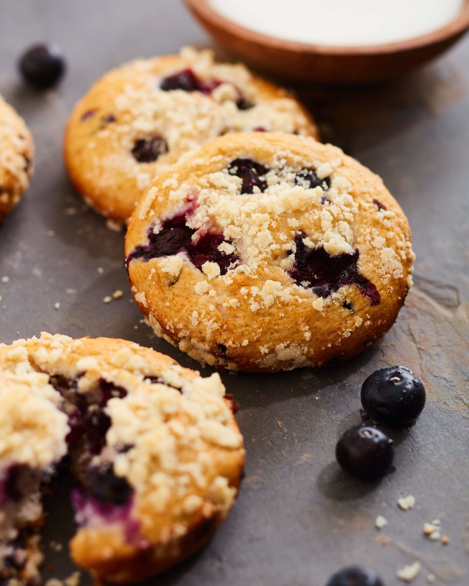

Blueberry Muffins

Description
These are some of the best blueberry muffins I have ever made!
I made them when I was in highschool and I found them online (on a paid website no less)
and I recently found this recipe again. Make them as big and as moist as you can!
Ingredients
- 1/2 cup of softened butter
- 1 1/4 cups of sugar
- 2 eggs
- 1 teaspoon vanilla extract
- 2 cups flour
- 1/2 teaspoons baking powder
- 1/2 cup of milk
- 2 cups blueberries, washed, drained, and picked over
- 3 teaspoons sugar
Steps
- Step 1: Preheat the oven to 375
- Step 2: Cream th ebutter adn 1 1/4 cups of sugar until light.
- Step 3: Add the eggs, one at a time, beating well after each addition. Add vanilla.
- Step 4: Sift together the flour, salt, and baking powder, and add to the creamed mixture alternately with the milk
- Step 5: Crush 1/2 cup blueberries with a fork, and mix into the batter. Fold in the remaining whole berries
- Step 6: Line a 12 cup standard muffin tin with cupcake liners, and fill with batter.
Sprinkle the 3 teaspoons sugar over the tops of the muffins, and bake at 375 degrees for about 30-35 minutes.
- Step 7: Remove Muffins from tin and cool for at least 30 minutes. Store, uncovered, or the muffins will be too moist the second day, if they last that long.